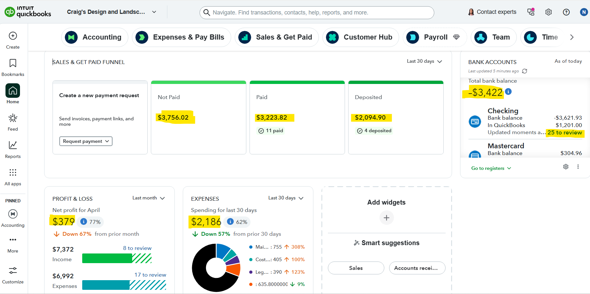

Purpose
Review the QuickBooks dashboard to understand the company’s current bookkeeping status before starting the monthly workflow.
Simple Example
The dashboard shows unpaid invoices, paid customer payments, deposited payments, bank transactions to review, net profit, expenses, and cash balance.
Simple Bookkeeping Decision Rule
Start with the dashboard first. Identify the areas needing attention, then move to the detailed tasks such as bank feed review, invoices, payments, deposits, and reports.

Analysis
I reviewed the QuickBooks dashboard to understand the company’s current bookkeeping status. The dashboard shows $3,756.02 in not paid invoices, $3,223.82 in paid customer payments, $2,094.90 in deposited payments, 25 bank transactions to review, a negative total bank balance of -$3,422, net profit of $379, and expenses of $2,186. The most important issue is the 25 bank transactions still waiting for review.
Result
The next bookkeeping priority is Bank Feed Transactions. Those 25 transactions should be reviewed, matched, categorized, or excluded before reconciliation and final reporting.